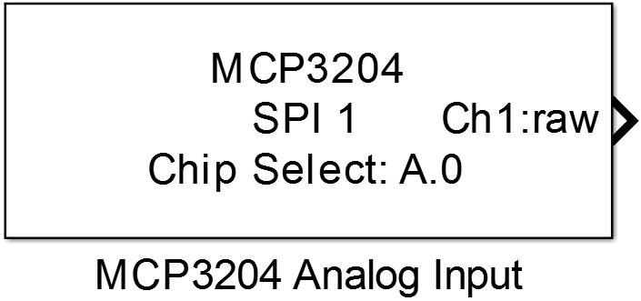
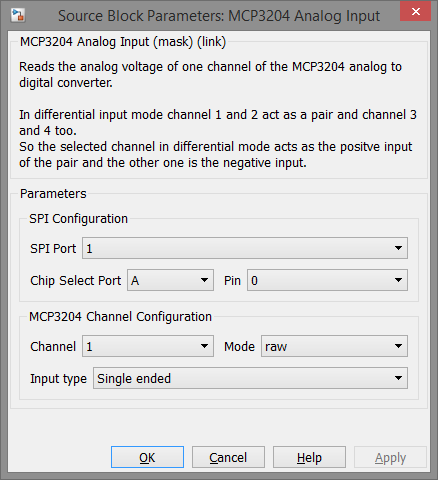

10.3. MCP3204 Analog Input
Reads the analog voltage of one channel of the MCP3204 analog to digital converter.
10.3.1. Library
/SPI
10.3.2. Description
{kind=link}
This block return the conversion result of one specified analog input channel of the MCP3204 analog to digital converter. The ADC can be configured in single ended or (pseudo)differential mode. The following table shows the channel configuration in differential mode.
| Channel Selection | resulting configuration |
|---|---|
| Channel 1 | CH1 = IN+ CH2 = IN- |
| Channel 2 | CH1 = IN- CH2 = IN+ |
| Channel 3 | CH3 = IN+ CH4 = IN- |
| Channel 4 | CH3 = IN- CH4 = IN+ |
Attention
In pseudo differential input mode the IN+ input can range from IN- to (Vref+IN-). The IN- input is limited to +/- 100mV from the Vss rail.
10.3.3. Data Type Support
The block’s output data type is either int16 or single depending on the Mode parameter.
10.3.4. Parameters and Dialog Box
10.3.4.1. SPI Port
Selects the SPI peripheral wich is configured by an SPI Master Config block.
10.3.4.2. Chip Select Port and Pin
Configuration of the MCU Pin the device’s chip select input is connected to.
10.3.4.3. Channel
Selects the analog input channel.
10.3.4.4. Mode
Selects the block’s output data type and range.
- raw → int16 data type output, range 0 to 4095
- relative → single data type, range 0 to 1
10.3.4.5. Input type
Configures the analog input channel to single ended or pseudo differential mode.
Attention
If a channel is configured as differential input the corresponding negative input channel must not be configured in another MCP3204 Analog Input block.